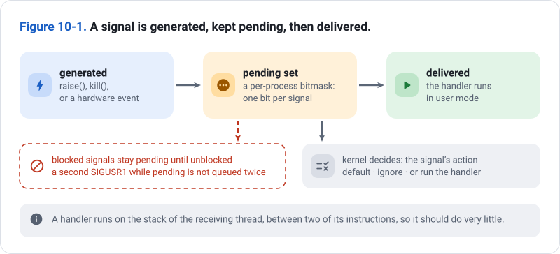
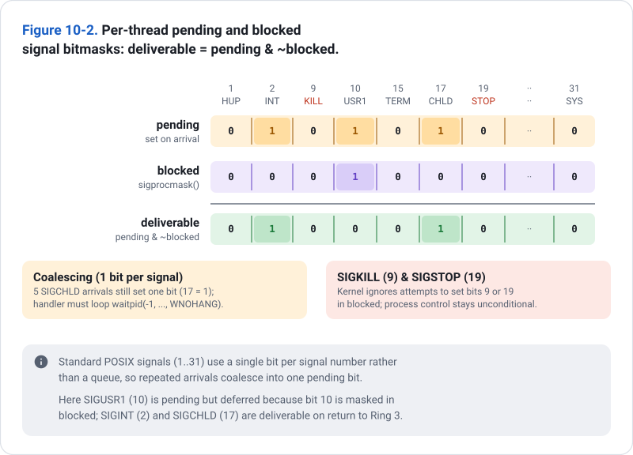

10. Asynchronous Notifications and Signal Semantics
A signal serves as the primary mechanism for asynchronous notification within a process, acting as the software analogue to a hardware interrupt. Generated by hardware exceptions (Segmentation Violation (SIGSEGV), Floating-Point Exception (SIGFPE)), terminal controls (Interrupt (SIGINT), Terminal Stop (SIGTSTP)), child lifecycle events (Child Status Changed (SIGCHLD)), or explicit inter-process signaling (User-Defined Signal 1 (SIGUSR1), Terminate (SIGTERM)), a signal compels the kernel to suspend the target thread’s normal instruction stream and divert execution to a designated disposition.
10.1 The Signal Lifecycle: Generation, Pending, and Delivery
The lifecycle of every standard Portable Operating System Interface (POSIX) signal progresses through three ordered phases (Figure 10-1):
- Generation: An event occurs and the kernel sets the bit corresponding to that signal number inside the target process’s (or thread’s) pending bitmask. Because standard signals (
1through31) are represented by a single bit per signal rather than a queue (Figure 10-2), pending signals coalesce: if fiveSIGCHLDorSIGUSR1signals arrive while the signal is blocked or before the process is scheduled, the pending bitmask records only a single1bit, and the handler runs once upon delivery. - Masking (Blocking): Each thread maintains its own signal mask (blocked set), a bitmask listing signals temporarily deferred. While a signal’s bit is set in the mask, the signal remains recorded in the pending set without interrupting execution. Kill (
SIGKILL, 9) and Stop (SIGSTOP, 19) can never be caught, blocked, or ignored, guaranteeing that the kernel and system administrator retain unconditional process control. - Delivery: Whenever the kernel prepares to transition a thread back from Ring 0 to Ring 3 (at the end of a system call or timer interrupt), it computes
deliverable = pending & ~blocked(Figure 10-2). If any bit is set, the kernel clears that bit inpending, constructs a synthetic signal frame on the thread’s user stack saving the interrupted register context, and redirects the user program counter to the registered disposition (either a default kernel action such as termination or core dump, ignore, or a user-supplied signal handler). When the handler returns, a trampoline invokessigreturn(2)to restore the interrupted registers and resume normal execution.


10.2 Constraints on Asynchronous Execution and Async-Signal-Safety
Signals introduce a subtle and often underestimated concurrency hazard: asynchronous re-entrancy on a single thread. Even in a strictly single-threaded program with zero mutexes, a signal handler can preempt main-line code between any two machine instructions while sharing the exact same address space and call stack. If the interrupted thread was halfway through updating malloc’s internal free-list pointers or holding a stdio buffer lock inside printf, and the signal handler invokes malloc or printf on that same thread, the thread immediately self-deadlocks or corrupts heap metadata.
POSIX therefore defines a strict allowlist of async-signal-safe functions (documented in signal-safety(7)) that are guaranteed safe to invoke from a handler because they are re-entrant or issue raw kernel traps directly without acquiring user-space locks. Allowed operations include write(2), waitpid(2), _exit(2), and lock-free atomic stores; forbidden operations include malloc, free, printf, std::mutex::lock, and pthread_mutex_lock.
Production systems software eliminates re-entrancy hazards by keeping signal handlers minimal. In C and C++, a handler stores a flag into a global variable declared volatile sig_atomic_t, where sig_atomic_t guarantees indivisible single-instruction loads and stores and volatile prevents the compiler from caching the variable in a register across loop iterations. In Rust, a handler stores into a static AtomicBool or AtomicI32 with Ordering::Relaxed (or Release/Acquire when publishing state). Any handler that invokes a fallible system call such as waitpid() must also save errno on entry and restore it before returning so interrupted main-line code never observes a clobbered error code. High-concurrency daemons often go one step further, blocking signals in all threads and converting them into synchronous event-loop notifications via signalfd on Linux, EVFILT_SIGNAL in kqueue, or a self-pipe write(2).
10.2.1 The Signal Configuration Interface (sigaction, sigprocmask, raise)
Older Unix code used signal(2), whose semantics diverged dangerously across operating systems (resetting handlers to SIG_DFL after a single delivery on System V while keeping them installed on Berkeley Software Distribution (BSD) kernels). Modern systems programming exclusively uses sigaction(2), which exposes every delivery property explicitly through struct sigaction:
struct sigaction {
void (*sa_handler)(int); // Simple handler, SIG_DFL, or SIG_IGN
void (*sa_sigaction)(int, siginfo_t *, void *); // Extended handler when SA_SIGINFO is set
sigset_t sa_mask; // Extra signals blocked while handler runs
int sa_flags; // Bitmask of delivery behavior flags
};
int sigaction(int signum, const struct sigaction *act, struct sigaction *oldact);
int sigemptyset(sigset_t *set);
int sigaddset(sigset_t *set, int signum);
int sigprocmask(int how, const sigset_t *set, sigset_t *oldset);
int raise(int sig);
Inside struct sigaction, sa_handler registers either a user callback void handler(int sig) or the sentinels SIG_DFL (default kernel action) and SIG_IGN (ignore); setting SA_SIGINFO in sa_flags selects the three-argument sa_sigaction callback instead (both fields typically share a C union, so callers populate only one). The sa_mask field specifies additional signals blocked while the handler runs (by default, the kernel also blocks the delivered signal itself unless SA_NODEFER is set); callers must always initialize sa_mask with sigemptyset(&sa.sa_mask) so uninitialized stack bytes do not block arbitrary signals. Useful sa_flags include SA_RESTART (automatically restarting slow blocking calls such as read, write, or waitpid instead of failing with EINTR) and SA_NOCLDSTOP (suppressing SIGCHLD on job-control stops and resumes).
Calling sigaction(signum, act, oldact) atomically installs act for signum (any signal except SIGKILL and SIGSTOP) and optionally saves the prior disposition into *oldact, returning 0 on success or -1 on error (EINVAL, EFAULT). Because the bit layout of sigset_t varies across kernels (64 bits on Linux; 32 bits on Darwin/BSD), callers construct masks exclusively with sigemptyset(&set) and sigaddset(&set, signum). Updating the calling thread’s blocked mask is performed atomically via sigprocmask(how, set, oldset) (or pthread_sigmask in multi-threaded programs), where how is SIG_BLOCK (mask |= *set), SIG_UNBLOCK (mask &= ~(*set)), or SIG_SETMASK (mask = *set), and oldset captures the prior mask for later restoration. If SIG_UNBLOCK exposes a signal waiting in the pending bitmask, the kernel delivers at least one pending unblocked signal before sigprocmask() returns to user space. Finally, raise(sig) delivers sig to the calling thread itself (equivalent to kill(getpid(), sig) in a single-threaded process).
Listing 10-1. Blocking, sending, and unblocking a signal (C++20).
// ch10/signals.cpp: block a signal, watch it stay pending, then deliver it.
#include <csignal>
#include <unistd.h>
#include <cstdio>
static volatile sig_atomic_t g_got_usr1 = 0;
static volatile sig_atomic_t g_got_int = 0;
static void on_usr1(int) { g_got_usr1 = 1; }
static void on_int(int) { g_got_int = 1; }
int main() {
struct sigaction sa {};
sa.sa_handler = on_usr1;
sigemptyset(&sa.sa_mask);
sigaction(SIGUSR1, &sa, nullptr);
sa.sa_handler = on_int;
sigaction(SIGINT, &sa, nullptr);
// Block SIGUSR1, send it to ourselves, and observe that it stays pending.
sigset_t set, oldset;
sigemptyset(&set);
sigaddset(&set, SIGUSR1);
sigprocmask(SIG_BLOCK, &set, &oldset);
raise(SIGUSR1); // queued, not delivered
printf("after raise while blocked: handled=%d\n", static_cast<int>(g_got_usr1));
sigprocmask(SIG_UNBLOCK, &set, nullptr); // delivery happens here
printf("after unblock: handled=%d\n", static_cast<int>(g_got_usr1));
raise(SIGINT); // delivered immediately
printf("after SIGINT: handled=%d\n", static_cast<int>(g_got_int));
sigprocmask(SIG_SETMASK, &oldset, nullptr);
}
Output 10-1. The handler runs only after the signal is unblocked.
after raise while blocked: handled=0
after unblock: handled=1
after SIGINT: handled=1
Listing 10-2. The same steps in Rust, using the libc crate.
// ch10/signals.rs: the same block-then-deliver sequence in Rust.
use std::mem;
use std::ptr;
use std::sync::atomic::{AtomicBool, Ordering};
static GOT_USR1: AtomicBool = AtomicBool::new(false);
static GOT_INT: AtomicBool = AtomicBool::new(false);
extern "C" fn on_usr1(_: libc::c_int) {
GOT_USR1.store(true, Ordering::Relaxed);
}
extern "C" fn on_int(_: libc::c_int) {
GOT_INT.store(true, Ordering::Relaxed);
}
fn main() {
// SAFETY:
// 1. Asynchronous Execution Safety: Signal handlers preempt execution on the same thread stack.
// Our signal callbacks (`on_usr1`, `on_int`) strictly perform atomic store operations
// (`AtomicBool::store`), which compile to lock-free instructions and are POSIX async-signal-safe.
// 2. Struct Validity: `sa` is zero-initialized and configured with an empty signal mask.
// 3. Mask Consistency: `sigprocmask` safely alternates the thread's signal disposition
// between blocked and unblocked states using valid stack-allocated `sigset_t` bitmasks.
unsafe {
let mut sa: libc::sigaction = mem::zeroed();
sa.sa_sigaction = on_usr1 as *const () as usize;
libc::sigemptyset(&mut sa.sa_mask);
libc::sigaction(libc::SIGUSR1, &sa, ptr::null_mut());
sa.sa_sigaction = on_int as *const () as usize;
libc::sigaction(libc::SIGINT, &sa, ptr::null_mut());
// Block SIGUSR1, send it to ourselves, and observe that it stays pending.
let mut set: libc::sigset_t = mem::zeroed();
let mut oldset: libc::sigset_t = mem::zeroed();
libc::sigemptyset(&mut set);
libc::sigaddset(&mut set, libc::SIGUSR1);
libc::sigprocmask(libc::SIG_BLOCK, &set, &mut oldset);
libc::raise(libc::SIGUSR1); // queued, not delivered
println!(
"after raise while blocked: handled={}",
GOT_USR1.load(Ordering::Relaxed)
);
libc::sigprocmask(libc::SIG_UNBLOCK, &set, ptr::null_mut()); // delivery here
println!("after unblock: handled={}", GOT_USR1.load(Ordering::Relaxed));
libc::raise(libc::SIGINT); // delivered immediately
println!("after SIGINT: handled={}", GOT_INT.load(Ordering::Relaxed));
libc::sigprocmask(libc::SIG_SETMASK, &oldset, ptr::null_mut());
}
}Output 10-2.
after raise while blocked: handled=false
after unblock: handled=true
after SIGINT: handled=true
10.3 Process Lifecycle Synchronization: SIGCHLD and Reaping
Whenever a child process terminates, the kernel retains its zombie Process Control Block (PCB) (Chapter 3) and generates SIGCHLD for the parent process. By default, SIGCHLD is ignored, requiring the parent to call waitpid() synchronously. Installing a SIGCHLD handler allows an event-driven server or supervisor to reap terminated children asynchronously without blocking its main loop.
Two signal properties dictate the exact shape of every correct SIGCHLD handler. First, because standard pending signals coalesce into a single bit, if three worker children exit while the parent is inside the handler or briefly unscheduled, the kernel delivers only one SIGCHLD. Calling waitpid() once per handler invocation would permanently leak two zombies. The handler must therefore drain all terminated children in a non-blocking loop (while (waitpid(-1, &status, WNOHANG) > 0)), reaping every zombie’s Process Identifier (PID) until waitpid() returns 0 (live children remain) or -1 with errno = ECHILD (no children remain). Second, setting sa.sa_flags = SA_RESTART ensures that an asynchronous SIGCHLD arriving while the parent is blocked inside accept(), read(), or sleep() resumes the interrupted call transparently rather than surfacing spurious EINTR errors.
In Listings 10-3 and 10-4, the parent first spawns child c1 without a handler and reaps it explicitly via blocking waitpid(c1, &status, 0). After flushing stdout so c2 does not inherit buffered output across fork(), the parent installs on_sigchld with SA_RESTART and spawns c2. When c2 exits, on_sigchld reaps it immediately; the subsequent waitpid(c2, &status, WNOHANG) in main() therefore returns -1 (ECHILD), confirming that no zombie remains.
Listing 10-3. Reaping one child directly and one child in a handler (C++20).
// ch10/sigchld.cpp: reaping by hand versus reaping by a SIGCHLD handler.
#include <sys/wait.h>
#include <unistd.h>
#include <csignal>
#include <cstdio>
static void on_sigchld(int) {
int status;
while (waitpid(-1, &status, WNOHANG) > 0) {
// reap one exited child per iteration
}
}
int main() {
// Child 1: the parent reaps it by hand.
pid_t c1 = fork();
if (c1 == 0) {
printf("child %d: exiting\n", getpid());
fflush(stdout);
_exit(0);
}
sleep(1); // c1 sits unreaped (a zombie) during this second
int status = 0;
pid_t r = waitpid(c1, &status, 0);
printf("parent reaped child %d by hand, status %d\n", r, WEXITSTATUS(status));
fflush(stdout); // flush before the next fork: the child inherits the buffer
// Child 2: a SIGCHLD handler reaps it.
struct sigaction sa {};
sa.sa_handler = on_sigchld;
sigemptyset(&sa.sa_mask);
sa.sa_flags = SA_RESTART;
sigaction(SIGCHLD, &sa, nullptr);
pid_t c2 = fork();
if (c2 == 0) {
printf("child %d: exiting\n", getpid());
fflush(stdout);
_exit(0);
}
sleep(1); // the pending SIGCHLD is delivered; the handler reaps c2
r = waitpid(c2, &status, WNOHANG);
printf("after handler: waitpid(WNOHANG) -> %d (-1 = already reaped)\n", r);
}
Output 10-3. The second child has already been reaped when the main program calls waitpid.
child 65134: exiting
parent reaped child 65134 by hand, status 0
child 65135: exiting
after handler: waitpid(WNOHANG) -> -1 (-1 = already reaped)
Listing 10-4. The same SIGCHLD reaping sequence in Rust.
// ch10/sigchld.rs: reaping by hand versus reaping by a SIGCHLD handler.
extern crate libc;
use std::io::{self, Write};
use std::mem::MaybeUninit;
use std::ptr;
extern "C" fn on_sigchld(_sig: libc::c_int) {
let mut status: libc::c_int = 0;
// SAFETY: `waitpid` with `WNOHANG` is async-signal-safe per POSIX.1-2008.
while unsafe { libc::waitpid(-1, &mut status, libc::WNOHANG) } > 0 {}
}
fn main() {
let _ = io::stdout().flush();
// SAFETY: Flushing stdio before `fork()` avoids duplicate user-space buffer flushes.
let c1 = unsafe { libc::fork() };
assert!(c1 >= 0, "fork failed");
if c1 == 0 {
// SAFETY: `getpid()` and `_exit(0)` are safe in the child process.
unsafe {
println!("child {}: exiting", libc::getpid());
let _ = io::stdout().flush();
libc::_exit(0);
}
}
// SAFETY: `sleep` and `waitpid` synchronize with child `c1`.
unsafe {
libc::sleep(1);
let mut status: libc::c_int = 0;
let reaped = libc::waitpid(c1, &mut status, 0);
let code = (status >> 8) & 0xff;
println!("parent reaped child {reaped} by hand, status {code}");
let _ = io::stdout().flush();
}
// Install async-signal-safe SIGCHLD handler.
// SAFETY: `sigaction` struct is zero-initialized and populated with a valid
// `extern "C"` handler function pointer and empty signal mask.
unsafe {
let mut sa = MaybeUninit::<libc::sigaction>::zeroed().assume_init();
sa.sa_sigaction = on_sigchld as *const () as usize;
libc::sigemptyset(&mut sa.sa_mask);
sa.sa_flags = libc::SA_RESTART;
libc::sigaction(libc::SIGCHLD, &sa, ptr::null_mut());
}
// SAFETY: Stdio is flushed; child exits immediately via `_exit(0)`.
let c2 = unsafe { libc::fork() };
assert!(c2 >= 0, "fork failed");
if c2 == 0 {
// SAFETY: Child prints its PID, flushes stdout, and terminates immediately.
unsafe {
println!("child {}: exiting", libc::getpid());
let _ = io::stdout().flush();
libc::_exit(0);
}
}
// SAFETY: `sleep(1)` is interrupted/resumed once SIGCHLD arrives; subsequent
// non-blocking `waitpid` confirms the handler already reaped `c2`.
unsafe {
libc::sleep(1);
let mut status: libc::c_int = 0;
let r = libc::waitpid(c2, &mut status, libc::WNOHANG);
println!("after handler: waitpid(WNOHANG) -> {r} (-1 = already reaped)");
}
}Output 10-4.
child 65137: exiting
parent reaped child 65137 by hand, status 0
child 65138: exiting
after handler: waitpid(WNOHANG) -> -1 (-1 = already reaped)
Standard POSIX signals (1..31) are single-bit flags (deliverable = pending & ~blocked), not queues. Repeated arrivals coalesce into one delivery, and handlers preempt main-line execution mid-instruction on the same stack, limiting handlers to async-signal-safe primitives.
In Listing 10-3 (code/ch10/sigchld.cpp), spawn five children simultaneously after installing on_sigchld and replace the while (waitpid(-1, &status, WNOHANG) > 0) loop with a single waitpid() call. Inspect ps while the parent sleeps to observe leaked zombie processes caused by SIGCHLD coalescing.
Calling printf(), malloc(), free(), or std::mutex::lock() inside a signal handler. If the signal interrupts the thread while it already holds the allocator or stdio lock, the handler immediately self-deadlocks the entire process.